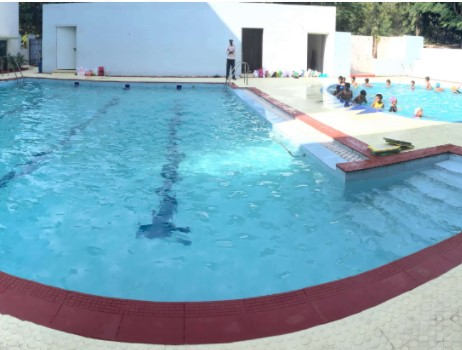

Contact Us ☎

Proud partners with Toastmasters, an international non-profit educational organization that extensively focuses on teaching public speaking and leadership skills through a worldwide network of clubs. With headquartered in Englewood, Colo., the organization’s membership exceeds 358,000 in more than 16,800 clubs in 143 countries. Since 1924, Through Toastmasters International, Delhi Public School, the Best Schools in India, has availed people from diverse backgrounds to become more communicators, confident speakers, and bellwethers.
Started as a group of speaking clubs organized by Ralph C. Smedley during his time in YMCA (Young Men’s Christian Association) in Bloomington, Illinois, as director of education at the YMCA, Smedley saw a need for the men in the community to learn how to verbalize, plan programs, conduct meetings, and work on committees, and he wanted to avail them.And hence decided to organize a club where they could learn these skills in a social environment, and the men responded well to the concept. He denominated the group the Toastmasters Club; “toastmaster” was a popular term that referred to a person who gave toasts at banquets.

The Indian Government has set up the Atal Innovation Mission (AIM) at NITI Aayog. Realizing the desideratum to engender scientific temper and cultivate the spirit of curiosity and innovation among puerile minds, AIM proposes to fortify the formulation of a network of Atal Tinkering Labs (ATL). NITI Aayog is inviting applications from schools to establish Atal Tinkering Labs (ATLs) across India. ATL is a workspace where puerile minds can give shape to their conceptions by learning innovation skills through hands-on do-it-yourself mode. The vision is to “Cultivate more than 1 million students in India as Neoteric Innovators”. Young children will get a chance to work with implements and equipment to understand the concepts of STEM (Science, Technology, Engineering, and Math).ATL would contain edifying and learning kits and equipment on different fields like in science, robotics, electronics, sensors, open-source microcontroller boards, 3D printers, and computers. This would be a great opportunity for our school to give our students hands-on learning to foster ingenuity, and imagination in adolescent minds. The objective of this scheme is to inculcate skills such as computational thinking, design mind-set, physical computing, adaptive learning, etc. Puerile children (Classes 6-12) will get a chance to work with implements and equipment to understand what, how and why aspects of STEM (Science, Technology, Engineering, and Math).One-time establishment cost of Rs.10 lakh and operational expenses of Rs.10 lakhs for a maximum period of 5 years to each ATL consumables, organizing popular science lecture series and other scientific activities.

With a growing economy and growing demand for STEM fields, we realize the importance of the next generation learning how to bring upon a difference in their world. Hence, at DPS we offer a variety of classes and workshops for kids. Robotic camps provide the students with an opportunity to have deep knowledge in the world of robotics and also explore how robotic design and computer programming can solve quandaries big and minuscule. Not only our robotics programs avail to establish technology, science, engineering concepts, they additionally work to build on students’ team-building skills as they work to consummate fun challenges. These collaborative skills are essential for student prosperity.
To unleash the scientist and the technologist inside a child, DPS, has made remarkable inception by exposing school children to the wonderful world of robotic. With a puerile and dynamic team dedicated to ideate, engender and distribute world-class robotics inculcation programs for school students in the form of Workshops, and Robotics Lab.
Basketball Court
Badminton Court
Kabbaddi Area
Swimming Pool
What's New?!
-
About CBSE- REDEFINING QUALITY AND HOLISTIC EDUCATION
DPS Nacharam is well known to be as one of the Best International Schools in Hyderabad. Delhi Public School – Nacharam, the best schools in Hyderabad, has been the alchemist since the establishment (2003) in shaping the holistic curriculum for students. A holistic view of education and schooling i.e., Guiding students to develop capacities, acquire virtues, and provide service.
-
About Cambridge International- EDUCATION FOR AN EVER CHANGING WORLD
DPS Nacharam has been at the forefront of providing world-class affordable education to students in and around Hyderabad for over a decade. Our vision for a greater challenge and connecting tomorrow has been appreciated by academia. Incoherence with our goal to become the flagship educational institute in India.